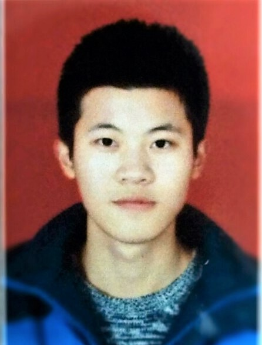

Junda Huang
B.S. 2016 - 2020
University of Science and Technology of China(USTC),
Institute of Informatiton Science and Technology,
Automation
Undergraduate students' dom 5 #526
Huangshan road 230027
Hefei, Anhui, China
Email: draja@mail.ustc.edu.cn
BackUp Email: ustcdraja@gmail.com